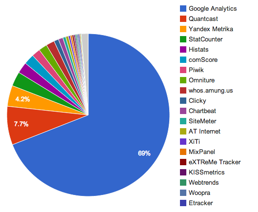

Xavier DENEUX
Lead developer
Contact:
@xavierdeneux
www.xavierdeneux.fr
Dans le web depuis presque 10ans
#photo, #running, #3dprinting
Expériences
- 8 ans de développement web
- 3 ans en tant que gérant d'un e-commerce
- 4 ans de consulting
"Le Web Analytics regroupe la mesure, la collecte, l’analyse et la présentation de données provenant d’Internet utilisées pour optimiser un site web, un site mobile ou une application."
Définition version courte: DMA!
- Définir
- Mesurer
- Agir
- Travail permanent
- Nécessite une bonne expertise
- Doit toujours répondre à la règle d'or
- Transversal

- Mieux comprendre les comportements utilisateurs
- Très peu d'indicateurs disponibles
- Faible fiabilité des données
- Des KPI toujours plus riches
- Une meilleur fiabilité
- Une étape obligatoire dans le webmarketing
- Malgré cela, un gros monopole de Google (2015)
